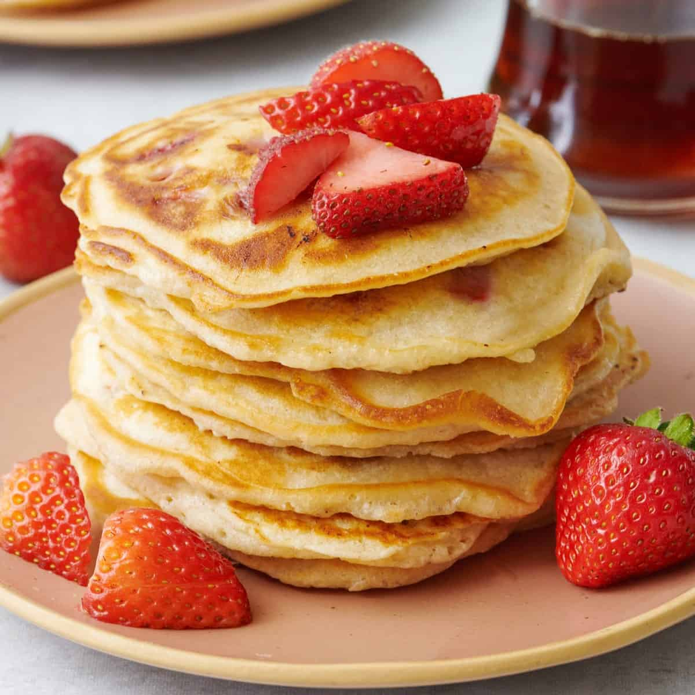

Strawberry Pancake

Description
These strawberry pancakes are light, fluffy, and packed with flavor. The vanilla makes this breakfast seem like dessert! Serve with butter and real maple syrup.
Ingredients
- 1 cup all-purpose flour
- 2 tablespoons brown sugar
- 2 teaspoons baking powder
- 1 teaspoon salt, or to taste
- 1 cup milk
- 1 large egg
- 2 tablespoons vegetable oil
- 2 tablespoons vanilla extract
- 1 cup chopped fresh strawberries
Steps
- Stir flour, brown sugar, baking powder, and salt together in a medium bowl. Pour in milk, egg, oil, and vanilla; mix until well blended. Stir in strawberries.
- Grease and heat a large skillet or griddle over medium heat.
- Drop batter by large spoonfuls onto the griddle and cook until bubbles form and the edges are dry, 2 to 3 minutes. Flip and cook until browned on the other side, about 2 minutes more. Repeat with remaining batter.